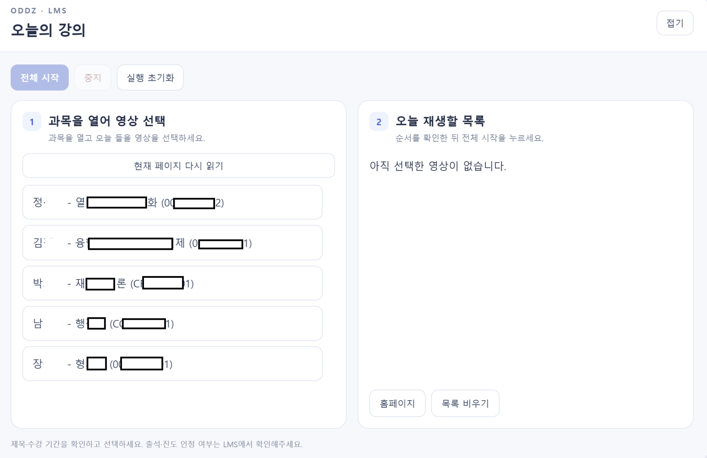

오늘의 강의
LMS 재생 도우미
오늘 들을 영상을 한곳에 모으고, 여러 과목의 강의를 원하는 순서로 이어서 재생하세요.
크롬 확장프로그램 다운로드
확장프로그램 다운로드 · v0.2.6PC 크롬용 · 직접 설치 필요 · LMS 전용 · ZIP 약 38KB
압축을 푼 뒤 크롬의 개발자 모드에서 설치합니다. 처음 사용한다면 위의 사용법 탭을 확인하세요.
오늘 들을 강의만 골라서
- 여러 과목에서 선택한 영상을 하나의 목록에 모읍니다.
- 목록의 순서를 바꾸고, 전체 시작으로 차례대로 재생합니다.
- 접기·펼치기로 강의 화면과 목록을 편하게 오갑니다.
- 중지한 뒤 이어서 시작할 수 있습니다.
화면 미리 보기

처음 설치하기
- ZIP 다운로드·압축 해제
다운로드 탭에서 파일을 받고, 계속 사용할 위치에 압축을 푸세요.
- 크롬 확장프로그램 관리 열기
크롬 주소창에
chrome://extensions를 입력하세요. - 개발자 모드 켜기
오른쪽 위의 개발자 모드 스위치를 켜세요.
- 압축해제된 확장 프로그램 로드
압축해제된 확장 프로그램을 로드합니다를 누르세요.
- extension 폴더 선택
압축을 푼 폴더 안에서
manifest.json이 들어 있는extension폴더를 선택하세요. - LMS 새로고침
LMS에 로그인하고 홈페이지를 새로고침하면 오늘의 강의 창이 나타납니다.
설치한 extension 폴더는 삭제하거나 옮기지 마세요. 기존 LMS 재생 확장프로그램이 있다면 먼저 꺼서 하나만 실행하세요.
크롬 도구 모음의 퍼즐 메뉴에서 아이콘을 고정할 수 있습니다. 영상 선택과 시작·중지는 LMS 안의 패널에서 합니다.
오늘의 목록 만들고 재생하기
과목 열기 → 영상 선택·추가 → 순서 확인 → 전체 시작
- 과목 열기
LMS 홈페이지의 오늘의 강의 창에서 과목 이름을 누르세요.
- 듣고 싶은 영상 추가
영상을 체크하고 선택 영상 추가를 누르세요. 영상이 보이지 않으면 LMS의 자세히 보기를 연 뒤 현재 페이지 다시 읽기를 누르세요.
- 다른 과목도 추가·순서 확인
홈페이지로 돌아가 다른 과목에서도 반복하세요. 오늘 재생할 목록의 ↑ ↓ 버튼으로 순서를 바꾸고, 불필요한 영상은 삭제하세요.
- 전체 시작
LMS 홈페이지에서 전체 시작을 누르세요. 영상이 끝나면 다음 선택 영상으로 이동합니다. 자동 재생이 차단되면 영상의 재생 버튼을 직접 누르세요.
제목·수강 기간·완료 여부를 원래 LMS 화면과 대조하세요. 완료한 영상이나 시작 전 영상도 자동 제외하지 않습니다. 처음에는 두 과목에서 영상 1개씩으로 확인해 보세요.
재생 중에는 이렇게 사용하세요
접기 / 펼치기
창이 영상을 가리면 접기를 누르세요. 오른쪽 작은 패널에서 선택·완료 개수를 확인할 수 있습니다.
중지 / 이어서 시작
중지는 자동 이동을 멈춥니다. 영상 자체는 계속 재생될 수 있습니다. 이어서 시작하면 중지했던 영상을 다시 엽니다.
실행 초기화
선택 목록을 유지하면서 실행 순서를 처음으로 되돌립니다. 재생 중이거나 중지 후 목록을 편집하려면 먼저 초기화하세요.
목록 비우기
대기 상태에서 담아 둔 영상 목록을 모두 삭제합니다.
실행 중에는 재생 탭을 열어 두고, 같은 탭에서 다른 강의를 직접 열지 마세요. 브라우저를 종료하거나 실행 탭을 닫으면 자동 실행이 중지됩니다.
재생 완료 표시는 영상 종료를 뜻합니다. 출석·진도 저장과 인정 여부는 LMS에서 직접 확인하세요.
새 버전으로 업데이트하기
- 재생 중지·새 ZIP 압축 해제
현재 실행을 멈추고 최신 ZIP을 받으세요.
- 기존 extension 폴더에 덮어쓰기
새 ZIP의 extension 폴더 안 파일을 기존에 설치한 extension 폴더 안에 덮어쓰세요.
- 확장프로그램·LMS 새로고침
chrome://extensions에서 오늘의 강의의 새로고침 아이콘을 누른 뒤 LMS 탭도 새로고침하세요.
같은 설치 폴더와 확장프로그램을 유지하면 기존 목록이 보존됩니다. 새 폴더로 따로 설치했다면 기존 확장프로그램은 끄세요.
잘 안 될 때
LMS에 창이 나타나지 않아요
PC 크롬인지, 확장프로그램이 켜져 있는지 확인한 뒤 LMS를 새로고침하세요. 설치할 때는 ZIP 자체가 아니라 manifest.json이 들어 있는 extension 폴더를 선택해야 합니다.
영상 목록이 비어 있어요
과목 페이지에서 주차의 자세히 보기를 열고 현재 페이지 다시 읽기를 누르세요. 이 도구는 현재 페이지에 로드된 영상 링크를 읽습니다.
영상이 재생되지 않거나 중지됐어요
수강 기간·접근 권한과 로딩 상태를 확인하세요. 자동 재생이 막혔다면 직접 재생 버튼을 누르세요. 영상이 45초 동안 나타나지 않으면 자동 실행이 중지됩니다.
목록 순서를 바꿀 수 없어요
중지 후에도 편집이 잠겨 있을 수 있습니다. 실행 초기화를 누른 뒤 순서를 바꾸세요.
저장되는 정보
선택한 과목·영상 이름, 영상 번호, 순서와 진행 상태를 크롬 확장프로그램의 로컬 저장소에 저장합니다. 목록 비우기 또는 확장프로그램 제거로 지울 수 있습니다.
설치 방식 참고: Chrome 공식 안내 ↗